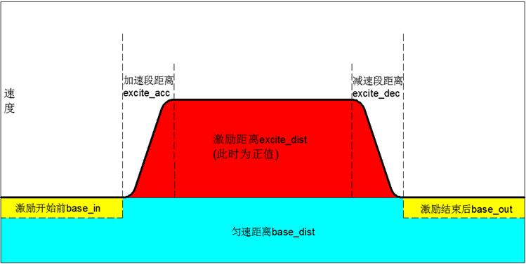
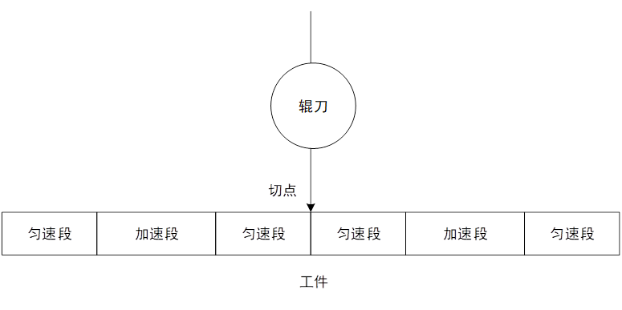
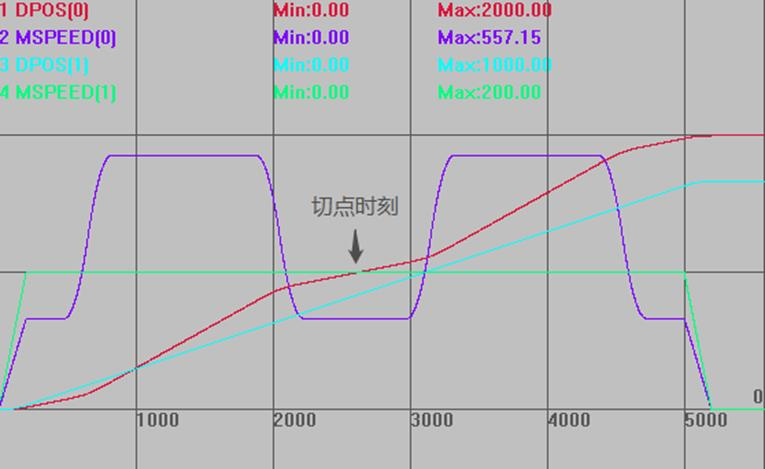

|
类型 |
同步运动指令 | ||||||||||||||
|
描述 |
此指令用于轴的激励运动，分为匀速运动和激励运动两部分。  请确保指令传递的距离参数*units是整数个脉冲，否则出现浮点数会导致运动有细微误差。 | ||||||||||||||
|
语法 |
FLEXLINK(base_dist, excite_dist, link_dist, base_in, base_out, excite_acc, excite_dec, link_axis, link_options, [start_pos], [link_offpos]) base_dist：跟随轴匀速运动距离 excite_dist：跟随轴激励运动距离，+值表示增加，-值表示减少， 跟随轴运动总距离=base_dist+excite_dist link_dist：整个指令过程，跟随轴运动完成，主轴移动的距离 base_in：激励开始前，跟随轴运动距离占base_dist的百分比 base_out：激励完成后，跟随轴剩余运动距离占base_dist的百分比（两者相加不要超过100%，否则excite_dist无效） excite_acc：激励过程中，跟随轴加速阶段运动距离占excite_dist的百分比，excite_dist为负值时，为减速阶段 excite_dec：激励过程中，跟随轴减速阶段运动距离占excite_dist的百分比，excite_dist为负值时，为加速阶段 (以上4个参数在excite_dist不为0时生效) link_axis：主轴轴号 link_options：与参考轴的连接方式，不同的二进制位代表不同的意义
start_pos：绝对位置触发 link_offpos：凸轮中间启动 | ||||||||||||||
|
适用控制器 |
4系列20170518以上固件版本支持。 3系列20161212以上固件版本支持。 | ||||||||||||||
|
例子 |
轮切应用 假设辊刀切一次周长500，工件长度1000，辊刀恒速，移动距离小于工件长度，此时工件需要有加速过程。设置工件前后为匀速段，中间为加速段。 实际应用中一般是辊刀变速，这里为了演示方便，使用工件变速。  RAPIDSTOP(2) WAIT IDLE(0) WAIT IDLE(1) BASE(0,1) DPOS=0,0 UNITS=100,100 SPEED = 200,200 ACCEL=1000,1000 DECEL=1000,1000 TRIGGER FLEXLINK(500,500,500,15,15,20,20,1) AXIS(0) '辊刀运行500距离，工件运行1000距离，在切点时刻保证速度一致，且对应一个周期位置 FLEXLINK(500,500,500,15,15,20,20,1) AXIS(0) MOVE(1000) AXIS(1) 运动轨迹和速度曲线 DPOS(0)垂直刻度1000，无偏移 MSPEED(0)垂直刻度300，无偏移 DPOS(1)垂直刻度600，无偏移 MSPEED(1)垂直刻度200，无偏移  |